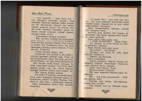

LTIkkinchi jahon urushi davridagi muhojirlar taqdiri va fojiali muhabbat haqidagi roman.
Ushbu asar Ikkinchi jahon urushi arafasida Fransiyada boshpana topgan muhojirlarning og'ir taqdiri, qo'rquv va muhabbat kurashini hikoya qiladi. Bosh qahramon va Elena o'rtasidagi munosabatlar urushning shafqatsiz voqeligi fonida sinovdan o'tadi. Asar insoniylikni saqlab qolish va taqdir zarbalariga qarshi turish mavzularini ochib beradi.